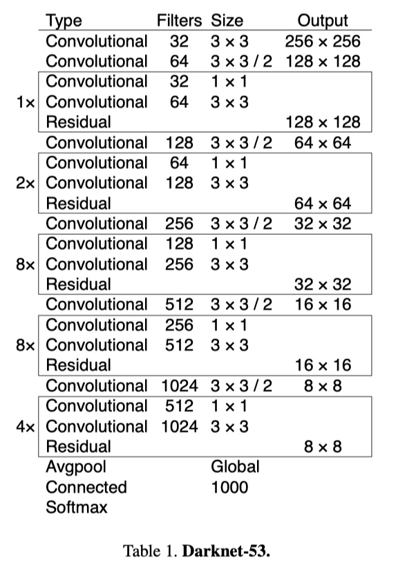

5.8 YOLOV2&V3
学习目标
- 目标
- 掌握YOLOV2的改进方法
- 掌握YOLOV3的网络改进
- 应用
- 无
5.8.1 YOLOV2介绍
YOLO v2的题目叫做：《YOLO9000：Better，Faster，Stronger》，是17年的一篇论文。达到了当时的state-of-art的效果。为什么叫9000？当时论文训练YOLO9000，一个实时的目标检测器，可以检测超过9000种不同的目标类别。也就是支持实时检测许多目标类型。（我们说的YOLOV2与YOLO9000有些区别，在于训练上的区别）
YOLO2是YOLO的升级版本，在YOLO的基础上用到了很多trick，尤其是结合了anchor box。前面提到yolo v1的缺点在于bbox的定位不准，精度低，对于小物体的检测效果不好，所以yolo v2吸收了其他很多算法来解决这些问题。
可以这样说V2版本，主要有一下工作
- 把多种物体检测网络(例:Faster R-CNN)和分类网络(ResNet,GoogleNet)的特点加入进去，并且使用ImageNet分类数据集训练了最终物体分类部分，然后使用COCO一样的检测数据集训练检测定位部分。
注：网络的发展先后顺序fasterrcnn->yolov1->ssd->yolov2->fpn->maskrcnn->yolov3(18)
5.8.1.1 改进方法
1、Better（更好）-七种方式
与最先进的检测系统相比，YOLO存在各种缺点。 YOLO与Fast R-CNN的误差比较分析表明，YOLO产生了大量的定位错误。
- 1、批标准化（Batch Normalization ）：批量标准化可以显着改善收敛性，而且不再需要其他形式的正则化。通过在YOLO中的所有卷积层上添加批量标准化，可以在mAP中获得了2％以上的改进。
- 2、高分辨率分类器（High Resolution Classifier）
- YOLOv2则将预训练分成两步：先用224x224的输入在ImageNet数据集训练分类网络，大概160个epoch（将所有训练数据循环跑160次）后将输入调整到448x448，再训练10个epoch（这两步都是在ImageNet数据集上操作）。然后利用预训练得到的模型在检测数据集上fine-tuning。这样训练得到的模型，在检测时用448x448的图像作为输入可以顺利检测。
- 3、基于卷积的Anchor机制（Convolutional With Anchor Boxes ）：从YOLO中移除全连接层，并使用锚框来预测边界框。
- YOLOv2通过缩减网络，使用416x416的输入，模型下采样的总步长为32，最后得到13x13的特征图，然后对13x13的特征图的每个cell预测5个anchor boxes，对每个anchor box预测边界框的位置信息、置信度和一套分类概率值。使用anchor boxes之后，YOLOv2可以预测13x13x5=845个边界框，模型的召回率由原来的81%提升到88%，mAP由原来的69.5%降低到69.2%.召回率提升了7%，准确率下降了0.3%。
- 4、维度聚类（Dimension Clusters ）：
- Faster-RCNN中anchor boxes的个数和宽高维度往往是手动精选的先验框（hand-picked priors)，设想能否一开始就选择了更好的、更有代表性的先验boxes维度，那么网络就应该更容易学到准确的预测位置，YOLOv2使用k-means聚类算法对训练集中的边界框做了聚类分析，尝试找到合适尺寸的Anchor。
- 作者发现如果采用标准的k-means聚类，在box的尺寸比较大的时候其误差也更大，而我们希望的是误差和box的尺寸没有太大关系。所以通过IOU定义了如下的距离函数，使得误差和box的大小无关：
YOLOv2采用的5种Anchor可以达到的Avg IOU是61，而Faster-RCNN采用9种Anchor达到的平均IOU是60.9，也即是说本文仅仅选取5种Anchor就可以达到Faster-RCNN中9种Anchor的效果。

第二个问题如下：
- 5、直接位置预测（Direct location prediction ）：模型不稳定大多数来自于预测框中位置。在FasterRCNN的候选区域网络中，网络预测的tx,ty。
- YOLOV2没有使用FasterRCNN预测偏移和尺度变换。而是遵循YOLOV1的方法，预测相对于网格单元位置的位置坐标。这使得真实值的界限在0到1之间。
网络在特征图（13 *13 ）的每个cell上预测5个bounding boxes。蓝色框是预测的bbox，点线矩形框是anchor
- 每一个bounding box预测：tx，ty，tw，th, to（置信度）。如果这个cell距离图像左上角的边距为（cx，cy）以及该cell对应的box维度（bounding box prior）的长和宽分别为（pw，ph），那么对应的box计算结果为：

- yolo网络只预测偏移量
- 偏移量与默认的anchor box进行运算之后得到bbox
由于我们限制位置预测，因此参数化更容易学习，从而使网络更加稳定。 使用维度聚类并直接预测边界框中心位置，可以使YOLO比锚框的版本提高近5％。
- 6、细粒度功能（Fine-Grained Features ）：修改后的YOLO在13×13特征图上预测检测结果。 虽然这对于大型物体是足够的，但使用更细粒度特征对定位较小物体有好处。
- 修改：添加一个直通层，以26×26的分辨率从较早的层中提取特征。
- 实现与作用：直通层将高分辨率特征与低分辨率特征连接起来，将相邻特征叠加到不同的通道中，而不是空间位置上，类似于ResNet中的恒等映射。将26×26×512的特征图变为13×13×2048的特征图。最终性能提高了1％。
- 7、多尺度训练（Multi-Scale Training ）：原来的YOLO使用448×448的输入分辨率。通过添加锚框，将分辨率更改为416×416。但是，由于我们的模型仅使用卷积层和池化层，因此可以实时调整大小。希望YOLOv2能够在不同尺寸的图像上运行，因此可以将多尺度训练应到模型中。
- 每隔几次迭代就改变一次网络。每10个批次我们的网络会随机选择一个新的图像尺寸大小。由于模型缩减了32倍，所以从32的倍数中抽取：{320,352，…，608}，因此，最小的选项是320×320，最大的是608×608
5.8.1.2 结构与训练
1、YOLOV2更快的效果
在VOC2007上的精度和速度比较（论文中还在VOC2012数据集中做了更多的实验比较）：

YOLOV2修改的结构对mAP的提高影响如下：

注：从YOLO到YOLOv2的路径。大多数列出的设计决策都会导致MAP显着增加，但其中切换到带有锚框的全卷积网络和使用新网络。切换到锚框方法增加召回率，而不改变mAP。
2、Darknet-19更快的模型
论文坐着使用一个新的分类模型作为一个新的分类模型作为YOLOv2的基础
- Darknet-19，它有19个卷积层和5个Maxpool层，中间大多使用3x3滤波器，也是用全局平均池化来做预测，使用1x1滤波器来压缩3x3的特征表示，批量归一化来稳定训练，加速收敛，并规范模型。
- 有一个比较：Darknet-19只需要55.8亿次操作来处理图像，VGG-16的卷积层在一个224×224分辨率单个图像上运行一次需要306.90亿浮点运算
（1）分类训练：
给予DarkNet神经网络框架
- 训练参数：Darknet-19在标准1000类的ImageNet上训练
- 1、使用随机梯度下降，初始学习率为0.1，多项式速率衰减为4，权重衰减为0.0005
- 2、动量为0.9，在标准ImageNet 1000类别分类数据集上对网络进行160个迭代周期的训练
- 数据处理
- 训练的时候仍然使用了很多常见的数据扩充方法（data augmentation），包括random crops, rotations, and hue, saturation, and exposure shifts。
- 分类微调：
- fine-tuning：第1步结束后，改用448x448输入（高分辨率模型），学习率改为0.001，训练10个epoch，其他参数不变。结果表明：fine-tuning后的top-1准确率为76.5%，top-5准确率为93.3%，若按照原来的训练方式，Darknet-19的top-1准确率是72.9%，top-5准确率为91.2%。可以看出，两步分别从网络结构和训练方式方面入手提高了网络分类准确率。
（2）检测训练：
- 网络修改：
- 1、修改网络：去除最后一个卷积层，然后添加三个具有1024个滤波器的3X3的卷积层，然后在最后添加1×1卷积层，该层的滤波器数量是检测需要的输出数量
- 2、在VOC中，论文选择预测5个边界框，每个边界框有5个坐标和20个类别，所以有125个输出维度
- 3、还添加了从最后的3×3×512层到倒数第二层卷积层的直通层，以便我们的模型可以使用细粒度特征
- 训练参数
- 1、训练网络160个迭代周期，初始学习率为10-3，在60和90周期除以10。我们使用0.0005的权值衰减和0.9的动量
- 数据处理
- 进行类似的增强技巧
5.8.1.3 联合分类与检测训练-YOLO9000（了解）
论文坐着提出了将分类数据和检测数据综合的联合训练机制，训练了可以识别超过9000种物品的实时目标检测与识别系统-YOLO9000。（方法也是值得去进行借鉴的）
过程：当网络遇到一张属于检测数据集的图片就基于YOLOv2的全部损失函数（包含分类部分和检测部分）做反向传播。当网络遇到一张属于分类数据集的图片就仅基于分类部分的损失函数做反向传播。
难度：要检测更多对象，从原来的VOC（检测数据集）的20种对象，扩展到ImageNet（分类数据集）的9000种对象。
大多数分类的方法采用softmax层，考虑所有可能的种类计算最终的概率分布。但是softmax假设类别之间互不包含，但是整合之后的数据是类别是有包含关系的。所以ImageNet的对象类别与COCO的对象类别不是互斥的。比如COCO对象类别有“狗”，而ImageNet细分成100多个品种的狗，狗与100多个狗的品种是包含关系，而不是互斥关系。
1、Hierarchical classification（多层分类）
ImageNet的数据标签来源于WordNet，论文根据WordNet建立了ImageNet标签的树（WordTree）。将ImageNet和COCO中的名词对象一起构建了一个WordTree。
其实就是一种包含关系，比如说terrier（猎狗）节点之下的Norfolk terrier、Yorkshire terrier、Bedlington terrier等，各品种的terrier之间是互斥的，所以计算上可以进行softmax操作。进行如下的softmax，同级之间可以建立:

构建好的WordTree有9418个节点（对象类型），如何表达一个对象呢？如果也是n维向量（这里WordTree有9418个节点（对象），即9418维向量），使预测的对象那一位为1，其它维都为0，但是这样的形式依然表示所有互斥关系，这样是不合理的。所以需要根据子节点来表示，如上图thing,matter,object,phenomenon为一个softmax向量，长度为4。
联合训练细节
- 1、由于ImageNet样本比COCO多得多，所以对COCO样本会多做一些采样（oversampling），适当平衡一下样本数量，使两者样本数量比为4:1
- 2、5个先验框减少到3个先验框，以减少计算量。YOLO2的输出是13x13x5x(4+1+20)，现在YOLO9000的输出是13x13x3x(4+1+9418)
5.8.1.4 总结
- 1、使用WordTree将各种来源的数据和我们的联合优化技术相结合，在ImageNet和COCO上同时进行训练。 YOLO9000向缩小检测和分类之间的数据集大小的差距迈出了坚实的一步。
- 2、YOLOv2在各种检测数据集中都是最先进的，并且比其他检测系统更快。
5.8.2 YOLOV3介绍
YOLOV3是前几个版本同一个作者，在18年做的一次改进。
比YOLOv2稍大一些，但更准确,速度仍然很快，在320×320 YOLOv3运行22.2ms。下图是在K40上的测试时间以及mAP

5.8.2.1 改进
1、网络结构变化
论文网络使用连续的3×3和1×1卷积层，有53个卷积层，称之为 Darknet-53

2、特征金字塔(FPN网络)
yolov3在每个位置上得到3个预测，每个预测由1个bbox,一个obj物体得分,80个分类得分组成。即=𝑁×𝑁×[3×(4+1+80)]。
在三个不同尺度的特征图上做预测
- 13x13,26x26,52x52大小的三个特征图做计算
每个尺度特征设置的先验框大小，如后面案例中模型的设置大小。会从中选出进行组合
yolo_anchors = np.array([(10, 13), (16, 30), (33, 23), (30, 61), (62, 45), (59, 119), (116, 90), (156, 198), (373, 326)], np.float32) / 416
3、逻辑回归替代softmax作为分类器
不使用softmax，发现它对于高性能没有必要，所以作者只是使用独立的逻辑分类器。 在训练过程中，使用二元交叉熵损失来进行类别预测。
4、训练
与之前YOLOV2类似，注意不是9000那个模式。做了多尺度训练，数据增强等等。
最终效果对比：
6、YOLOV1&V2&V3对比（损失函数bbox数目）
- 损失函数
1、V2版本的损失函数： bbox的w和h的损失计算方式去掉了二次根号。
2、V3版本的损失函数
最大的变动是分类损失换成了二分交叉熵。论文中修改如下
- bbox数目变化
1、V1：7x7x2=98
2、V2：7x7x (5(每个grid cell5个bbox)x (4(位置)+1(box置信度)+20(20个分类概率)))
3、V3：(Nx N +2xNxN +4x(NxN))x [3x(4+1+80(分类概率))]
- 如：13x13,26x26,52x52每个尺度特征图预测三个bbox
5.8.4 总结
- YOLOV2的改进方法
- YOLOV3的网络改进